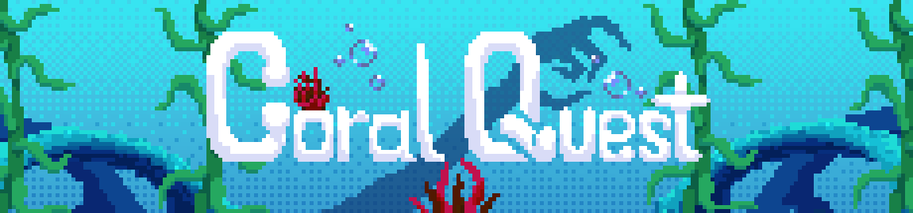

Coral Quest é um jogo criado como material de estudo de gamedev em Unity, e foi feito como continuação da Workshop Unity for Women, desenvolvida pela BOSS, a iniciativa da UnB com o objetivo de promover participação de minorias na comunidade Open Source.